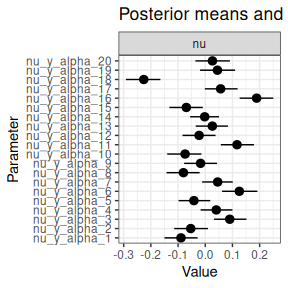
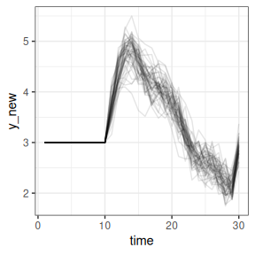
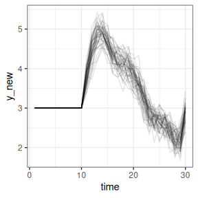

Model customization and non-MCMC estimation with dynamite
Source:vignettes/dynamite_custom.Rmd
dynamite_custom.RmdSometimes the current modelling choices of dynamite might not fully suit your needs. This vignette shows how you can modify an existing dynamite model and still use for example the predict method of dynamite.
1 Using modified Stan code with dynamite
The get_code() method can be used to extract the generated Stan code for inspection:
f <- obs(y ~ -1 + z + varying(~ x + lag(y)) + random(~1), "gaussian") +
splines(df = 20)
dynamite_code <- get_code(f, data = gaussian_example, time = "time",
group = "id")Calling cat(dynamite_code) code then prints the code, or you can write it directly to a file for example with sink(). The get_code() method also works for dynamitefit objects, e.g., get_code(gaussian_example_fit).
Consider for example that instead of a normal distribution for the random effects, you would like to use \(t\)-distributed random effects. This is not directly supported by the dynamite, but the previously obtained Stan code is easy to modify for this purpose. We replace the line to_vector(nu_raw) ~ std_normal(); in the model block of original model code with
and add real<lower=2> df; to the parameters block. Now we can call the dynamite with our new model code, using the custom_stan_model argument, which accepts either a character string containing the model code or a path to a .stan file.
fit <- dynamite(
dformula = f, data = gaussian_example, time = "time", group = "id",
custom_stan_model = "custom_code.stan", chains = 1, refresh = 0
)The print() method does not recognize the new parameter df, but we can extract those samples manually from the stanfit object:
as.array(fit$stanfit, pars = "df") |>
posterior::as_draws_df() |>
posterior::summarise_draws()
#> # A tibble: 1 × 10
#> variable mean median sd mad q5 q95 rhat ess_bulk ess_tail
#> <chr> <dbl> <dbl> <dbl> <dbl> <dbl> <dbl> <dbl> <dbl> <dbl>
#> 1 df 21.8 18.5 14.2 11.9 5.30 48.2 1.00 638. 551.It is important to note that in order to use the post-processing functions of dynamite, the modifications to the Stan code should not alter the names or sizes of the higher level parameters such as the random effect parameters nu in this example. Modifying priors, rewriting likelihood calculations or transformed parameters for efficiency gains, adding constraints to parameters, or computing additional variables in generated quantities block are some of the potential modifications that allows you to still use many of the useful functions of dynamite. For example, we can visualize the random effects of our custom model:
plot(fit, type = "nu", n_params = 20)
perform leave-one-out cross-validation:
loo(fit)
#>
#> Computed from 1000 by 1450 log-likelihood matrix.
#>
#> Estimate SE
#> elpd_loo 244.0 27.0
#> p_loo 89.4 3.3
#> looic -487.9 54.1
#> ------
#> MCSE of elpd_loo is 0.3.
#> MCSE and ESS estimates assume MCMC draws (r_eff in [0.3, 1.8]).
#>
#> All Pareto k estimates are good (k < 0.67).
#> See help('pareto-k-diagnostic') for details.and compute predictions:
newdata <- data.frame(
time = 1:30,
id = 51,
y = rep(c(3, NA), times = c(10, 20)),
x = 0,
z = 1
)
pp <- predict(fit, newdata = newdata, new_levels = "original", n_draws = 50)
ggplot2::ggplot(pp, ggplot2::aes(time, y_new, group = .draw)) +
ggplot2::geom_line(alpha = 0.1) +
ggplot2::theme_bw()
2 Using non-MCMC algorithms in dynamite
While dynamite is written for MCMC estimation of DMPMs, we can still use other algorithms provided by Stan. Continuing the previous example, if we want to do variational inference instead, we first extract the input data for Stan with get_data():
d <- get_data(fit)Like get_code(), this method is available for both dynamiteformula and dynamitefit objects. With the custom code and the corresponding input data, we can call the variational algorithm of rstan:
model <- rstan::stan_model("custom_code.stan")
fit_vb <- rstan::vb(model, data = d, iter = 1e5, refresh = 0)
#> Warning: Pareto k diagnostic value is 2.45. Resampling is disabled. Decreasing
#> tol_rel_obj may help if variational algorithm has terminated prematurely.
#> Otherwise consider using sampling instead.We can analogously perform optimization with rstan::optimization() and analyze the results as with a standalone Stan model. However, because vb() returns a stanfit object with samples from the approximate posterior, we can also exploit some of the functionality of dynamite. Let’s assume that we want to perform variational inference because MCMC is too slow. If we first create a dynamitefit object fit from a dynamite() call with only few iterations, we can replace fit$stanfit with the stanfit object returned from rstan::vb():
fit_vb_dynamite <- fit
fit_vb_dynamite$stanfit <- fit_vbNow the methods for dynamitefit objects such as summary() and predict() work as they would for MCMC based output (note though that for example the rhat and ess values from summary() are not meaningful):
summary(fit_vb_dynamite, types = "beta")
#> # A tibble: 1 × 10
#> parameter mean sd q5 q95 time group category response type
#> <chr> <dbl> <dbl> <dbl> <dbl> <int> <int> <chr> <chr> <chr>
#> 1 beta_y_z 1.97 0.00696 1.96 1.98 NA NA NA y beta
pp2 <- predict(
fit_vb_dynamite, newdata = newdata, new_levels = "original", n_draws = 50
)
ggplot2::ggplot(pp2, ggplot2::aes(time, y_new, group = .draw)) +
ggplot2::geom_line(alpha = 0.1) +
ggplot2::theme_bw()